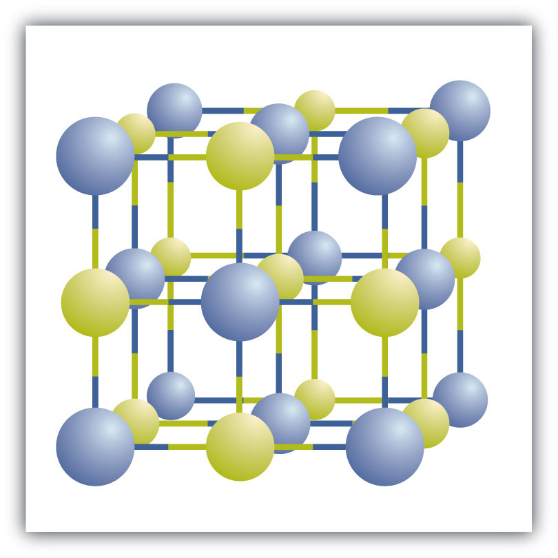

We have already encountered some chemical formulas for simple ionic compounds. A chemical formulaA concise list of the elements in a compound and the ratios of these elements. is a concise list of the elements in a compound and the ratios of these elements. To better understand what a chemical formula means, we must consider how an ionic compound is constructed from its ions.
Ionic compounds exist as alternating positive and negative ions in regular, three-dimensional arrays called crystalsA three-dimensional array of alternating positive and negative ions. (Figure 3.6 "A Sodium Chloride Crystal"). As you can see, there are no individual NaCl “particles” in the array; instead, there is a continuous lattice of alternating sodium and chloride ions. However, we can use the ratio of sodium ions to chloride ions, expressed in the lowest possible whole numbers, as a way of describing the compound. In the case of sodium chloride, the ratio of sodium ions to chloride ions, expressed in lowest whole numbers, is 1:1, so we use NaCl (one Na symbol and one Cl symbol) to represent the compound. Thus, NaCl is the chemical formula for sodium chloride, which is a concise way of describing the relative number of different ions in the compound. A macroscopic sample is composed of myriads of NaCl pairs; each pair called a formula unitA set of oppositely charged ions that compose an ionic compound.. Although it is convenient to think that NaCl crystals are composed of individual NaCl units, Figure 3.6 "A Sodium Chloride Crystal" shows that no single ion is exclusively associated with any other single ion. Each ion is surrounded by ions of opposite charge.
Figure 3.6 A Sodium Chloride Crystal
A crystal contains a three-dimensional array of alternating positive and negative ions. The precise pattern depends on the compound. A crystal of sodium chloride, shown here, is a collection of alternating sodium and chlorine ions.
In Section 3.2 "Ions", we encountered LiBr and MgO, which are formulas for other ionic compounds.
The formula for an ionic compound follows several conventions. First, the cation is written before the anion. Because most metals form cations and most nonmetals form anions, formulas typically list the metal first and then the nonmetal. Second, charges are not written in a formula. Remember that in an ionic compound, the component species are ions, not neutral atoms, even though the formula does not contain charges. Finally, the proper formula for an ionic compound always obeys the following rule: the total positive charge must equal the total negative charge. To determine the proper formula of any combination of ions, determine how many of each ion is needed to balance the total positive and negative charges in the compound.
This rule is ultimately based on the fact that matter is, overall, electrically neutral.
By convention, assume that there is only one atom if a subscript is not present. We do not use 1 as a subscript.
If we look at the ionic compound consisting of lithium ions and bromide ions, we see that the lithium ion has a 1+ charge and the bromide ion has a 1− charge. Only one ion of each is needed to balance these charges. The formula for lithium bromide is LiBr.
When an ionic compound is formed from magnesium and oxygen, the magnesium ion has a 2+ charge, and the oxygen atom has a 2− charge. Although both of these ions have higher charges than the ions in lithium bromide, they still balance each other in a one-to-one ratio. Therefore, the proper formula for this ionic compound is MgO.
Now consider the ionic compound formed by magnesium and chlorine. A magnesium ion has a 2+ charge, while a chlorine ion has a 1− charge:
Mg2+ Cl−Combining one ion of each does not completely balance the positive and negative charges. The easiest way to balance these charges is to assume the presence of two chloride ions for each magnesium ion:
Mg2+ Cl− Cl−Now the positive and negative charges are balanced. We could write the chemical formula for this ionic compound as MgClCl, but the convention is to use a numerical subscript when there is more than one ion of a given type—MgCl2. This chemical formula says that there are one magnesium ion and two chloride ions in this formula. (Do not read the “Cl2” part of the formula as a molecule of the diatomic elemental chlorine. Chlorine does not exist as a diatomic element in this compound. Rather, it exists as two individual chloride ions.) By convention, the lowest whole number ratio is used in the formulas of ionic compounds. The formula Mg2Cl4 has balanced charges with the ions in a 1:2 ratio, but it is not the lowest whole number ratio.
By convention, the lowest whole-number ratio of the ions is used in ionic formulas. There are exceptions for certain ions, such as Hg22+.
Write the chemical formula for an ionic compound composed of each pair of ions.
Solution
Write the chemical formula for an ionic compound composed of each pair of ions.
the calcium ion and the oxygen ion
the 2+ copper ion and the sulfur ion
the 1+ copper ion and the sulfur ion
Some ions consist of groups of atoms bonded together and have an overall electric charge. Because these ions contain more than one atom, they are called polyatomic ionsAn ion with more than one atom.. Polyatomic ions have characteristic formulas, names, and charges that should be memorized. For example, NO3− is the nitrate ion; it has one nitrogen atom and three oxygen atoms and an overall 1− charge. Table 3.1 "Some Polyatomic Ions" lists the most common polyatomic ions.
Table 3.1 Some Polyatomic Ions
| Name | Formula |
|---|---|
| ammonium ion | NH4+ |
| acetate ion | C2H3O2− (also written CH3CO2−) |
| carbonate ion | CO32− |
| chromate ion | CrO42− |
| dichromate ion | Cr2O72− |
| hydrogen carbonate ion (bicarbonate ion) | HCO3− |
| cyanide ion | CN− |
| hydroxide ion | OH− |
| nitrate ion | NO3− |
| nitrite ion | NO2− |
| permanganate ion | MnO4− |
| phosphate ion | PO43− |
| hydrogen phosphate ion | HPO42− |
| dihydrogen phosphate ion | H2PO4− |
| sulfate ion | SO42− |
| hydrogen sulfate ion (bisulfate ion) | HSO4− |
| sulfite ion | SO32− |
The rule for constructing formulas for ionic compounds containing polyatomic ions is the same as for formulas containing monatomic (single-atom) ions: the positive and negative charges must balance. If more than one of a particular polyatomic ion is needed to balance the charge, the entire formula for the polyatomic ion must be enclosed in parentheses, and the numerical subscript is placed outside the parentheses. This is to show that the subscript applies to the entire polyatomic ion. An example is Ba(NO3)2.
Write the chemical formula for an ionic compound composed of each pair of ions.
Solution
Write the chemical formula for an ionic compound composed of each pair of ions.
the magnesium ion and the carbonate ion
the aluminum ion and the acetate ion
There are two ways to recognize ionic compounds. First, compounds between metal and nonmetal elements are usually ionic. For example, CaBr2 contains a metallic element (calcium, a group 2A metal) and a nonmetallic element (bromine, a group 7A nonmetal). Therefore, it is most likely an ionic compound. (In fact, it is ionic.) In contrast, the compound NO2 contains two elements that are both nonmetals (nitrogen, from group 5A, and oxygen, from group 6A). It is not an ionic compound; it belongs to the category of covalent compounds that we will study in Chapter 4 "Covalent Bonding and Simple Molecular Compounds". Also note that this combination of nitrogen and oxygen has no electric charge specified, so it is not the nitrite ion.
Second, if you recognize the formula of a polyatomic ion in a compound, the compound is ionic. For example, if you see the formula Ba(NO3)2, you may recognize the “NO3” part as the nitrate ion, NO3−. (Remember that the convention for writing formulas for ionic compounds is not to include the ionic charge.) This is a clue that the other part of the formula, Ba, is actually the Ba2+ ion, with the 2+ charge balancing the overall 2− charge from the two nitrate ions. Thus, this compound is also ionic.
Identify each compound as ionic or not ionic.
Solution
Identify each compound as ionic or not ionic.
N2O
FeCl3
(NH4)3PO4
SOCl2
Science has long recognized that blood and seawater have similar compositions. After all, both liquids have ionic compounds dissolved in them. The similarity may be more than mere coincidence; many scientists think that the first forms of life on Earth arose in the oceans.
A closer look, however, shows that blood and seawater are quite different. A 0.9% solution of sodium chloride approximates the salt concentration found in blood. In contrast, seawater is principally a 3% sodium chloride solution, over three times the concentration in blood. Here is a comparison of the amounts of ions in blood and seawater:
| Ion | Percent in Seawater | Percent in Blood |
|---|---|---|
| Na+ | 2.36 | 0.322 |
| Cl− | 1.94 | 0.366 |
| Mg2+ | 0.13 | 0.002 |
| SO42− | 0.09 | — |
| K+ | 0.04 | 0.016 |
| Ca2+ | 0.04 | 0.0096 |
| HCO3− | 0.002 | 0.165 |
| HPO42−, H2PO4− | — | 0.01 |
Most ions are more abundant in seawater than they are in blood, with some important exceptions. There are far more hydrogen carbonate ions (HCO3−) in blood than in seawater. This difference is significant because the hydrogen carbonate ion and some related ions have a crucial role in controlling the acid-base properties of blood. (For more information on the acid-base properties of blood, see Chapter 10 "Acids and Bases", Section 10.5 "Buffers".) The amount of hydrogen phosphate ions—HPO42− and H2PO4−—in seawater is very low, but they are present in higher amounts in blood, where they also affect acid-base properties. Another notable difference is that blood does not have significant amounts of the sulfate ion (SO42−), but this ion is present in seawater.
What information is contained in the formula of an ionic compound?
Why do the chemical formulas for some ionic compounds contain subscripts, while others do not?
Write the chemical formula for the ionic compound formed by each pair of ions.
the ratio of each kind of ion in the compound
Sometimes more than one ion is needed to balance the charge on the other ion in an ionic compound.
Write the chemical formula for the ionic compound formed by each pair of ions.
Write the chemical formula for the ionic compound formed by each pair of ions.
Write the chemical formula for the ionic compound formed by each pair of ions.
Write the chemical formula for the ionic compound formed by each pair of ions.
Write the chemical formula for the ionic compound formed by each pair of ions.
Write the chemical formula for the ionic compound formed by each pair of ions.
Write the chemical formula for the ionic compound formed by each pair of ions.
Write the chemical formula for the ionic compound formed by each pair of ions.
For each pair of elements, determine the charge for their ions and write the proper formula for the resulting ionic compound between them.
For each pair of elements, determine the charge for their ions and write the proper formula for the resulting ionic compound between them.
Which compounds would you predict to be ionic?
Which compounds would you predict to be ionic?